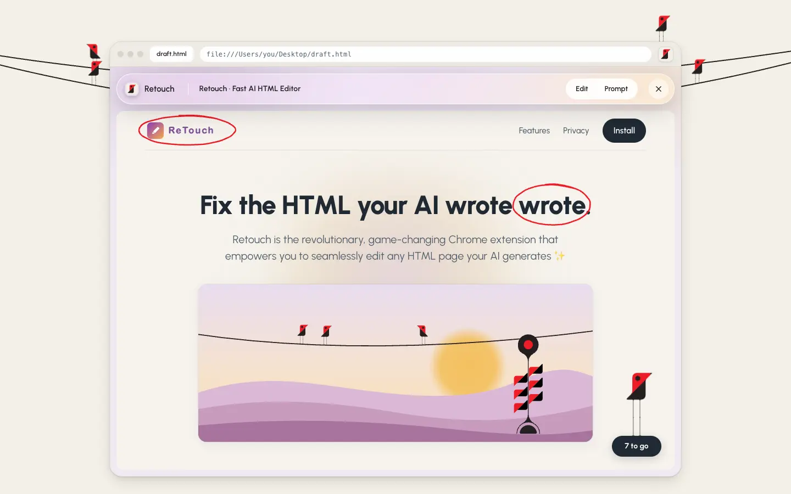
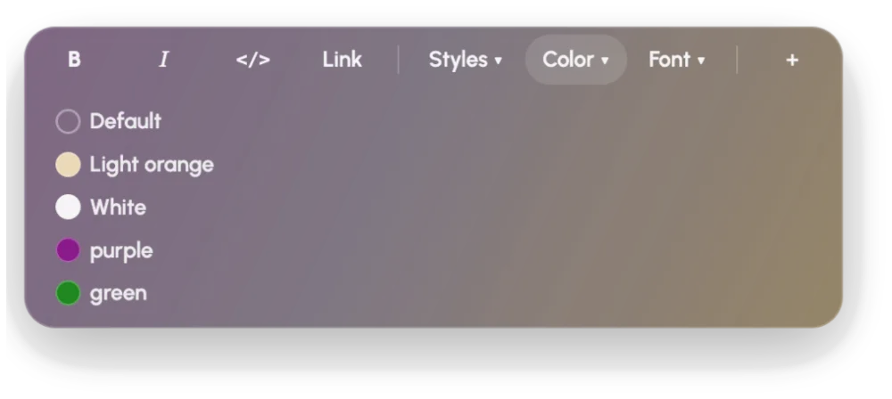
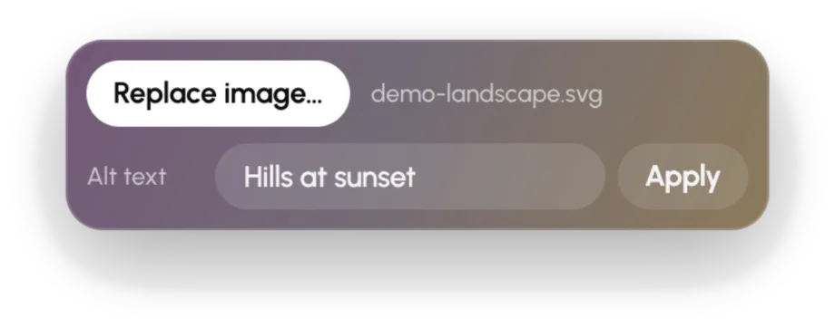
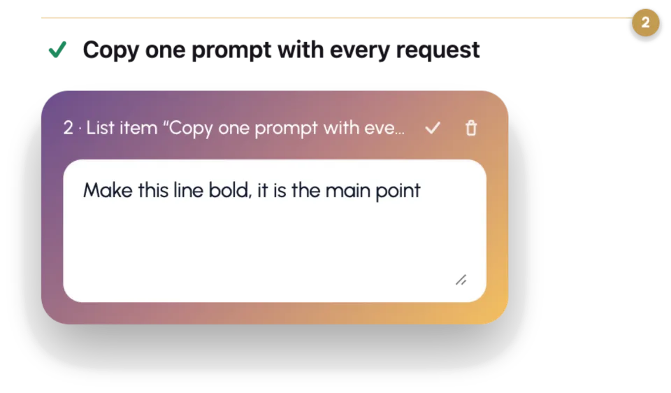
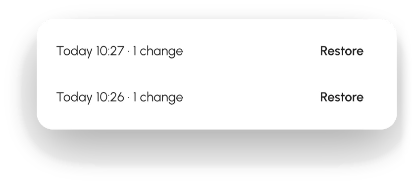

Fix the HTML your AI wrote.
Retouch is a free Chrome extension for the pages your AI makes. Open the file, click the text, change it, save. Everything you didn't touch stays byte for byte the same.
Open source · MIT · Works on HTML files on your computer · Nothing is uploaded
Click. Type. Save.
Step 1
Open the HTML file in Chrome. Any page your AI made: a report, a landing page, a pitch, a portfolio. Click the Retouch icon in the browser toolbar to begin editing.

Step 2
Click any text and change it. Type right on the page. Bold, links and the page's own colours and fonts are one click away, styled to look native.
Step 3
Press Save. Retouch writes only what you changed back into the file. No reformatting, no lost scripts or comments.
Format with what the page already has.
Select text and a small pill appears: bold, italic, code, link. The Styles, Color and Font menus list what this page's own stylesheet uses, described in plain words. Nothing is invented, so nothing looks pasted in.

Swap an image and fix its alt text from the same panel.

Ten small fixes. Each one used to mean a rebuild.
| What's wrong | What you do today | With Retouch |
|---|---|---|
| Typo in the headline | Re-prompt and wait for a rebuild. Or open a code editor and hunt for the string in 900 lines of generated markup. | Click it, type, save. |
| 18% should be 21% | The same rebuild. Or find and replace, and hope the number isn't in four other places. | Change the digits in place. |
| One sentence has to go | Describe the sentence to the AI and hope it picks the right one. | Select, delete, save. |
| Placeholder logo where the real one goes | Paste a file path into the prompt and hope the rebuild finds it. | Click it, Replace image, pick the file. |
| Alt text is empty or says “image” | Find the tag in an editor, or accept the gap and move on. | Type it in, Apply. |
| Three paragraphs that should be bullets | Ask the AI to reformat, and check it didn't rewrite the words. | Bullets, then Join. Enter adds the next one. |
| You saved, and wish you hadn't | Hope the AI still has the old version somewhere. | Undo, or pick any earlier version from History. |
| The rebuild changed things you liked | Diff two downloads to find what drifted. | Only what you touched is rewritten. |
| Downloads full of report(4).html | Guess which one is current. | Same file, edited in place. |
| You are not the person who opens a code editor | Ask someone technical. Wait until Monday. | Click the icon in Chrome. |
Text in Retouch. Layout back to your AI.
Some fixes aren't typing: move this section, make these cards sit side by side. Switch to Prompt, pin a note on the part you mean, and copy one clean prompt for ChatGPT, Claude or whichever AI made the page. It names the exact element and line, so the AI changes that and nothing else.

Where do your files go? Nowhere.
No account, no server, no upload. Retouch reads and writes the file on your own computer and nothing else. Every save keeps the version before it, on your computer, so you can undo a save or go back further. It's open source under the MIT licence, so you can check.

Open source, all of it.
Every line of Retouch is on GitHub under the MIT licence. Read the code, check that it makes no network calls, report a bug, or send a fix.
Set up in a minute.
-
Install Retouch
One click from the Chrome Web Store. Prefer to see the code first? The latest release on GitHub is the same files: unzip, open
chrome://extensions, switch on Developer mode, Load unpacked. -
Let Retouch see local files
Chrome hides files on your disk from extensions until you allow it. Open Retouch's details and switch on Allow access to file URLs.
-
Restart Chrome
Chrome applies that switch only after a restart. Quit it, open it, come back to this page.